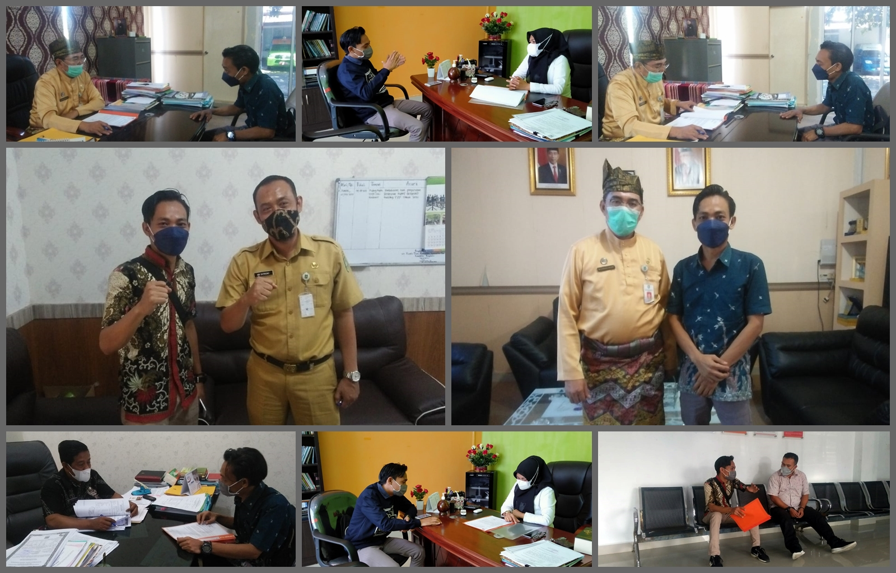
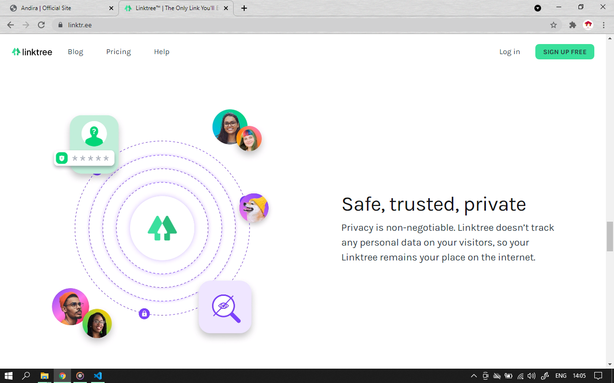
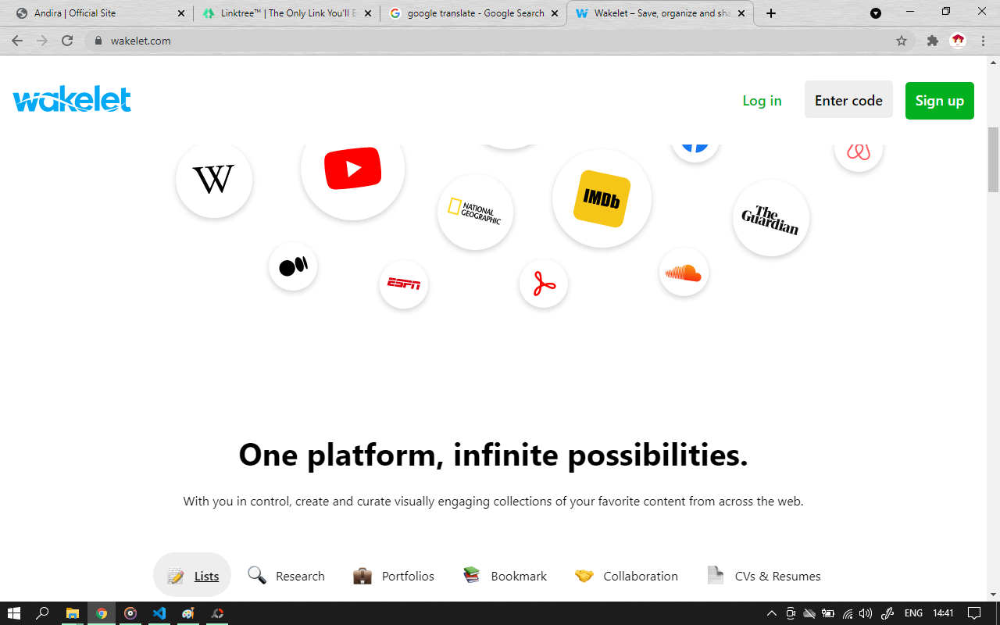
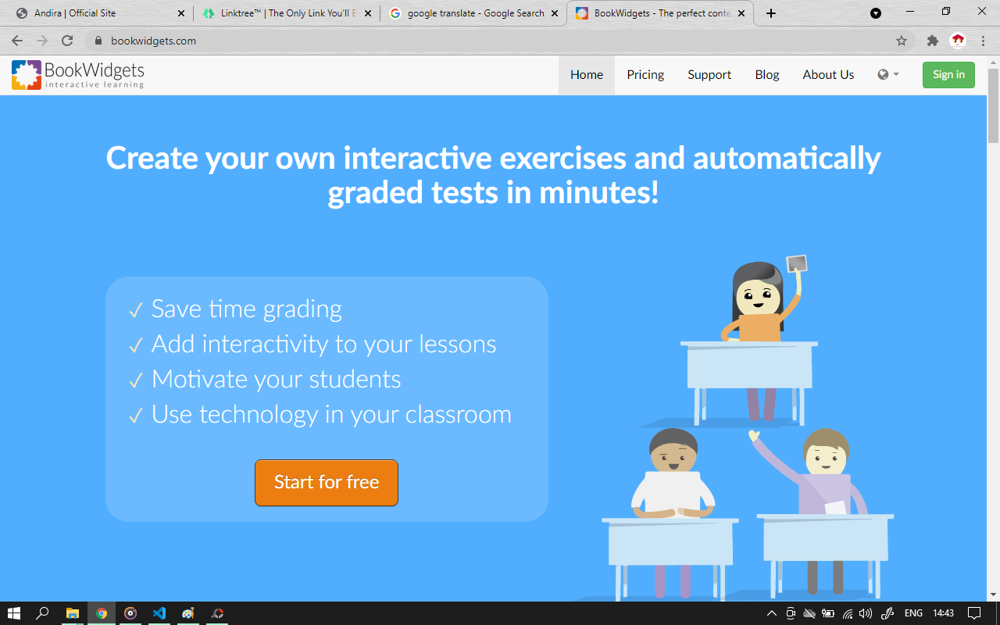

DIGITAL AND EDUCATIONAL SERIES
Edukasi Literasi Digital Melalui Momentum Hari Sumpah Pemuda
Kolaborasi Pandu Digital & jaWAra Internet Sehat

Jakarta, 28 Oktober 2022 – Bersatu Bangun Bangsa, Tema Sumpah Pemuda Tahun 2022 ini menjadi salah satu inspirasi dan nilai terselenggaranya kegiatan “ Seminar Nasional Pemuda Indonesia Makin Cakap Digital “.
Masifnya perkembangan teknologi saat ini dan hadirnya internet membawa banyak perubahan pada dunia terkait dengan aktivitas dan interaksi setiap individu di ruang digital. Hal ini penting untuk dapat disikapi dengan tepat, bijak dan bermanfaat sebagai upaya dan langkah mewujudkan Indonesia Makin Cakap Digital.
Ketua Tim Pandu Digital Kementerian Komunikasi dan Informatika Republik Indonesia, Bambang Tri Santoso dalam arahannya pada kegiatan ini menyampaikan pentingnya peran pemuda Indonesia dalam mengambil sikap yang tepat serta melalui momentum di hari Sumpah Pemuda tahun 2022 ini untuk bersama-sama bersatu dan membentuk bangsa Indonesia serta membangun Indonesia menjadi satu kesatuan dengan menumbuhkan semangat untuk ikut bersama memajukan Indonesia. Kominfo memiliki program literasi digital yang menjadi prioritas sebagai program untuk meningkatkan indeks literasi digital masyarakat yang masih rendah.
“ Persatuan harus terus diperjuangkan dengan menghargai perbedaan, menjaga toleransi serta menjaga keutuhan dan kedaulatan NKRI. Kominfo berusaha untuk menyatukan Indonesia dengan adanya teknologi melalui akses internet berkecapatan tinggi di seluruh tanah air dan hal ini semoga cepat terwujud sehingga semua merasakan hak yang sama dari Sabang sampai Merauke sehingga bukan perbedaan yang mucul tapi kebanggaan budaya daerah di seluruh Indonesia “. Lanjutnya.
Masih dalam arahannya, Bambang Tri Santoso menyampaikan dan mengajak pemuda Indonesia untuk tidak berpangku tangan, terus meningkatkan kemampuan dan kecakapan digital dan memberikan aksi dan kontribusi bagi kemajuan Indonesia.
Dedikasi Pandu Digital – Sementara itu, Agus Andira Pandu Digital Badge Biru yang merupakan inisiator dari kegiatan ini mengatakan, kegiatan ini dilaksanakan sebagai upaya membantu mempersiapkan sumber daya manusia yang lebih unggul khususnya peran dan aksi pemuda dalam memanfaatkan internet dan teknologi secara sehat , positif, kreatif, kritis dan produktif di era revolusi 4.0 dan menuju era society 5.0.
“ Kita semua memiliki peran dan ruang yang sama. Kita berhadapan dan akan berhadapan dengan berbagai kesempatan dan juga tantangan. Untuk menghadapi semua ini, pastinya kita butuh sikap yang tepat dan kolaborasi yang efektif sehingga menjadikan sebuah ruang dan kegiatan yang positif bagi kita sebagai pengguna internet khususnya di Indonesia. Tuturnya.
Masih menurut Andira, dilaksanakan kegiatan ini sebagai langkah konkrit dan kerja nyata dalam menjalankan dedikasi dan edukasi literasi digital di Indonesia. Menguatkan nilai dan edukasi literasi digital dan manfaat serta urgensi kepada pemuda di Indonesia dengan materi pembahasan dari kompetensi 4 Pilar Literasi Digital Kementerian Komunikasi dan Informatika RI. Kegiatan ini juga mengajak pemuda Indonesia untuk sadar dan peduli mengenai kecakapan, budaya, etika dan keamanan dalam bermedia digital dengan pertimbangan tingginya berbagai aktivitas yang berdampak negatif dan merugikan. Selain dari hal itu, melalui kegiatan ini ia mengajak pemuda Indonesia untuk berkolaborasi, berpartisipasi dan memberikan aksi yang positif, produktif dan kreatif dalam beraktivitas di ruang digital dengan harapan melalui program ini mampu memberikan langkah dan upaya efektif dan baik serta peran pemuda terkait perkembangan era digital sebagai mewujudkan pemuda yang cerdas literasi dan cakap digital serta Indonesia Makin Cakap Digital.
Selengkapnya dapat diakses di portal Pandu Digital Indonesia.
Dedikasiku Untuk Indonesia
"Pandu Digital Talks 2021", Sept 25, 2021

Apresiasi dan Penghargaan Pandu Digital Indonesia, Kementerian Komunikasi dan Informatika Republik Indonesia
Jakarta, 25 September 2021 – Alhamdulillah, Anugerah Allah SWT dan do’a orangtua serta dukungan dan support semua pihak. High appreciation dan ucapan terima kasih sedalam-dalamnya kepada Kementerian Komunikasi dan
Informatika Republik Indonesia melalui KOMTIK Subdit Pemberdayaan Komunitas TIK dan tim Pandu Digital Talks 2021 atas kepercayaan dan kesempatan yang luar biasa dan sangat berharga untuk hadir berbagi dan sharing tentang beberapa
upaya dan kegiatan pemberdayaan yang telah saya lakukan di lapangan khususnya di sektor pendidikan.
Do and give the best, melakukan dan memberikan sesuatu yang terbaik dalam hidup selalu menjadi motivasi dan motto hidup saya. Terlahir dari keluarga yang sangat sederhana dan dengan keterbatasan ekonomi tidak menyurutkan semangat
saya dalam memberikan dedikasi dan pengabdian untuk selalu menjadi pribadi yang bermanfaat, menjadi bagian dalam mendukung program pemerintah dalam memberikan dedikasi dan kontribusi nilai yang positif untuk masyarakat Indonesia
dan semua pihak.
” Guru terbaik adalah pengalaman dan perjalanan sebuah kehidupan, hargailah segala sesuatu yang sudah kamu jalani, karena tidak semua orang mampu dan bisa melewati segala sesuatu yang sudah kamu jalani “. Andira (2021).
Terus Berkarya Untuk Indonesia. Salam Sehat untuk Seluruh Sobat Pandu Digital Indonesia.
Andira DEC Pemuda Bengkalis dan 59 Aktivis Muda Indonesia Terpilih
"JaWAra Internet Sehat Indonesia", August 21, 2021

Youth Movement Digital Literacy - Edukasi Literasi Digital
Bengkalis, 21 Agustus 2021 – Pandemi COVID-19 memberikan peluang sekaligus tantangan baru bagi masyarakat di dunia digital. Peluang muncul dengan peningkatan jumlah pengguna internet dan beragam penggunaan untuk
berbagai macam aktivitas produktif, termasuk bekerja dan belajar. Akan tetapi hal ini juga beriringan dengan munculnya beragam tantangan, seperti makin maraknya dan berkembangnya berita dan informasi hoaks/disinformasi, khususnya
terkait COVID-19 dan Vaksinasi serta tantangan terkait privasi dan data pribadi di internet dan era digital saat ini.
Agus Andira yang selalu disapa Andira ini, seorang pemuda dari Kabupaten Bengkalis Provinsi Riau dengan aktivitas keseharian sebagai pegiat digital dan mendedikasikan diri dalam pengabdian dibidang digital dan
pendidikan, aktif di beberapa kegiatan Nasional dan Internasional dan mendirikan sebuah komunitas yang bergerak di isu digital dan pendidikan ini telah berhasil terpilih dan tergabung dalam sebuah program Nasional “JaWAra Internet
Sehat-Youth Movement Digital Literacy “ sebuah Gerakan Edukasi Literasi Digital yang di inisiasi oleh ICT Wach dan WhatsApp dengan dukungan Kementerian Komunikasi dan Informatika Republik Indonesia setelah melalui tahapan seleksi
administrasi dan wawancara di bulan juni yang lalu.
“Alhamdulillah, anugerah dari Allah SWT dan suatu kehormatan serta kebanggaan yang luar biasa buat saya terpilih dan diberikan kepercayaan dalam program ICT Watch dan WhatsApp dalam mendedikasikan diri untuk menjalankan program
dan kegiatan Edukasi Literasi Digital yang menjadi urgensi dan program Pemerintah kita saat ini terkait tantangan-tantangan yang akan kita hadapi dan terus berkembang khususnya di era digital yang akan di impelementasikan untuk
seluruh lapisan masyarakat, “ kata Andira.
“Insya Allah konsep dan program yang akan dijalankan, mengangkat 2 isu utama yang menjadi perbincangan dan tantangan kita terkait hoaks covid-19 dan vaksinasi serta tantangan yang berkaitan dengan keamanan privasi dan data pribadi
di era digital saat ini. Saya juga sudah membangun komunikasi kepada mitra-mitra kegiatan di antaranya instansi pemerintahan, perguruan tinggi dan komunitas lokal dalam membangun kerjasama dan dukungan dalam melaksanakan dan
menjalankan kegiatan ini. Hal ini sangat urgensi dan tanggungjawab kita bersama. kita butuh langkah yang tepat agar semua masyarakat terliterasi dan memiliki keterampilan serta awareness dalam menghadapi hal-hal yang negatif
digital dan agar kita terhindar menjadi sasaran para pelaku cyber atau pihak-pihak yang tidak bertanggungjawab, “ lanjutnya.
Komunikasi Program dan Kegiatan JaWAra Menuju Masyarakat Cerdas Literasi dan Cakap Digital
"JaWAra Internet Sehat Indonesia", August 18, 2021

Youth Movement Digital Literacy - Edukasi Literasi Digital
Pandemi COVID-19 memberikan peluang sekaligus tantangan baru dan luar biasa bagi masyarakat di dunia digital. Peluang muncul dengan berbagai variasi dan meningkatnya jumlah pengguna internet dan beragam penggunaan dan keperluan
untuk berbagai macam aktivitas produktif, termasuk bekerja dan belajar. Akan tetapi hal ini juga beriringan dengan munculnya beragam tantangan, seperti makin maraknya dan berkembangnya berita dan informasi hoaks/disinformasi,
khususnya terkait COVID-19 dan Vaksinasi serta tantangan terkait privasi dan data pribadi di internet dan era digital saat ini.
Komunikasi yang efektif dan berkelanjutan merupakan upaya dan langkah nyata dalam membangun kerjasama yang baik terhadap seluruh pihak. Sebagai langkah awal dalam menjalankan program dan kegiatan Edukasi Literasi Digital dengan konsep Assistancing and Strengthening Workshops Digital Literacy dengan mengangkat 2 isu utama terkait hoaks Covid-19 dan Vaksinasi serta Keamanan Privasi dan Data Pribadi di era digital, JaWAra Internet Sehat membangun komunikasi secara langsung kepada beberapa mitra kegiatan yang terdiri dari unsur Instansi Pemerintahan diantaranya Pemerintah Kabupaten Bengkalis, Dinas Komunikasi, Informatika dan Statistik Kabupaten Bengkalis, Dinas Pendidikan Kabupaten Bengkalis, Dinas Perpustakaan dan Kearsipan Kabupaten Bengkalis, 2 Perguruan Tinggi yang berada di Kabupaten Bengkalis.
Selanjutnya, komunikasi dibangun dengan sistem komunikasi digital yang disampaikan ke IAI Tafaqquh Fiddin Dumai dan LP2M IAI Tafaqquh Fiddin Dumai dan dalam waktu dekat akan melakukan komunikasi dengan Dinas Pendidikan dan
Kebudayaan dan Dinas Komunikasi, Informatika dan Statistik Kabupaten Siak dengan asas agar program ini dapat tercapai di beberapa kota atau kabupaten yang menjadi target utama kegiatan ini. Usaha dan upaya lain juga telah
dilakukan dengan membangun komunikasi dan kerjasama dalam melaksanakan kegiatan di skala Provinsi Riau dengan mitra Lembaga Penjaminan Mutu Pendidikan (LPMP) Provinsi Riau, Dinas Pendidikan Provinsi Riau dan komunitas lokal dengan
asas agar masyarakat Riau dapat menerima dan menjangkau kegiatan ini dengan baik dan terwujudnya masyarakat yang cerdas, bijak, tepat dan terliterasi.
Pada beberapa pertemuan yang telah berlangsung, Instansi Pemerintahan Kabupaten Bengkalis, Perguruan Tinggi dan beberapa komunitas lokal sangat menyambut baik dan mendukung untuk menjalankan program dan kegiatan Edukasi Literasi
Digital ini agar terlaksana dengan baik, efektif dan memberikan dampak dan manfaat yang positif.
Linktree Platform
"The Only Link You’ll Ever Need", August 11, 2021

Safe, trusted, private..
Connect audiences to all of your content with just one link, quotes yang menjadikan platform ini memiliki ketertarikan tersendiri dengan konsep dan design yang menarik dan sederhana agar mudah digunakan oleh pengguna sebagai media yang kreatif dan sangat menarik.
Berkembangnya arus teknologi memberikan dampak yang positif untuk semua sektor kegiatan dan juga hal ini beriringan dengan berbagai macam tantangan khususnya dalam meningkatkan kapasitas dan keterampilan kita terkait bidang karir dan kegiatan yang kita jalani dengan mengikuti arus dan perkembangan teknologi saat ini. Linktree adalah landasan untuk video, artikel, resep, tur, toko, situs web, pos sosial terbaru Anda di mana pun Anda online, Dari tips untuk konten Anda, hingga donasi untuk proyek Anda, biarkan penggemar & pengikut Anda mendukung Anda dalam memonetisasi hasrat Anda.
Membuat Linktree membutuhkan waktu beberapa detik. Gunakan editor drag-and-drop sederhana untuk mengelola konten Anda dengan mudah, dan hal yang menarik, platform ini hadir sebagai bagian dari upaya dan kreasi anda dalam membangun konsep materi dan strategi, platform ini merupakan bagian dan solusi yang bisa anda gunakan. Be a Creative..
Wakelet Platform
"Free Platform for Teacher. Everything in one Place", April 23, 2021

Be a Creative..
Berkembangnya arus teknologi memberikan dampak yang positif untuk semua sektor kegiatan terutama di bidang pendidikan. Lahirnya ide dan kreatifitas setiap individu telah memberikan dampak yang baik dalam memberikan kontribusi dalam menghadapi suatu permasalahan yang dihadapi terutama pada masa pandemi Covid-19 yang dihadapi oleh seluruh dunia saat ini.
saya ingin mengenalkan sebuah platform gratis yang memungkinkan anda membuat konten untuk disimpan dan dibagikan. nilai dan konten yang dapat dimuatkan di antaranya video, artikel, gambar, tweet, tautan dan bahkan anda bisa menambahkan teks anda sendiri disini. platform ini bernama Wakelet. Sebagai bagian dari upaya dan kreasi anda dalam membuat konten pembelajaran berbentuk visual, bisa anda muatkan di platform ini.
BookWidgets Platform
"Create your own Interactive Exercises", April 25, 2021

Be a Great Creation..
Pada artikel sebelumnya kita sedikit membahas tentang Wakelet platform. kali ini kita akan mengenal sebuah platform berbayar yang memiliki fitur-fitur kreatif untuk para guru dalam menyusun dan merancang konten pembelajaran dan juga model-model evaluasi yang akan disampaikan kepada peserta didik. Disini saya ingin mengenalkan beberapa fitur yang akan anda dapatkan sebagai pengguna platform ini.
Fitur Tes dan Kajian yang terdiri dari Slip Keluar, Kartu Flash, Kuis, Papan Tulis Berbagi, Lini Masa, Web Quest, Lembar Kerja dan beberapa fitur lainnya. Kedua Fitur Permainan yang memungkinkan para pengguna untuk merancang
sebuah permainan yang kreatif berdasarkan materi pembelajaran dan soal-soal lainnya. Fitur Permainan ini terdiri dari Kartu Bingo, Teka-teki silang, Peta Minda, Mencocokkan pasangan kartu dan fitur-fitur kreatif lainnya.
Ketiga Fitur Gambar dan Video yang mengarahkan kepada sebuah konten pembelajaran dan penilaian berbasis gambar dan video. Pengguna bisa memilih berbagai fitur disini seperti Perbandingan gambar, Urutan Frame, Korsel gambar, Gambar
Acak dan fitur-fitur keren lainnya yang dapat anda gunakan.
Update terbaru dari platform ini memudahkan para pengguna untuk mempelajari dan menganalisa fitur-fitur untuk konten pembelajaran dan penilaian dengan mengaktifkan
pilihan versi bahasa Indonesia.
Tunggu apa lagi? mari berkreasi dan berikan karya terbaik anda.
Google Platform
"Teach From Anywhere", April 27, 2021

Make a Great Experience..
Lahirnya ide dan kreatifitas setiap individu telah memberikan dampak yang baik dalam memberikan kontribusi dalam menghadapi suatu permasalahan yang dihadapi terutama pada masa pandemi Covid-19 yang dihadapi oleh seluruh dunia saat ini. Sebelumya kita sudah mengenal secara umum platform-platform keren yang menjadi opsi pilihan khususnya para guru dalam membuat dan menyajikan konten pembelajaran dan penilaian yang disusun secara sistem digital.
Disini saya yakin dan percaya bahwa semua sudah tahu dan sudah banyak yang menggunakan akses dan layanan google dalam membuat dan mengembangkan konten pembelajaran dan penilaian di masing-masing satuan kerjanya.
Sedikit mengulas dan berbagi beberapa fitur dan referensi dari google khususnya dalam membuat sebuah konten kreatif baik untuk pembelajaran dan kegiatan pelatihan serta kegiatan lainnya. Diantara fitur yang paling banyak digunakan yaitu Google Form sebagai media membuat form untuk kegiatan pendaftaran, form untuk kuis dan soal dan masih banyak lagi kreasi serta pengembangan konten yang bisa dilakukan. Selanjutnya ada Google Sites atau GSites untuk membangun sebuah website kelas untuk peserta didik dan juga untuk promosi kegiatan usaha ataupun lainnya sesuai dengan kebutuhan masing-masing pengguna dalam mengaplikasi kreativitasnya.
Menarik bukan? nah, kembali kepada setiap individu untuk mampu meningkatkan keterampilan mereka dalam mengembangkan kreatifitas dan konten sesuai dengan kebutuhan mereka masing-masing. Up your Skill and Be a Creative..